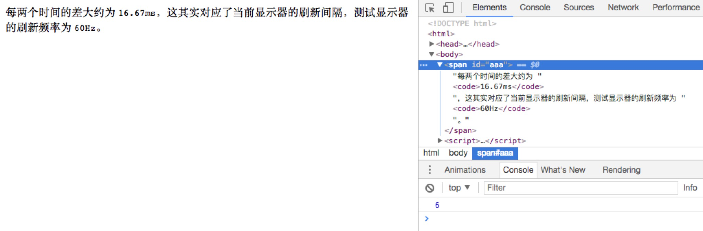

getBoundingClientRect 的使用场景介绍
最近面试的时候被问到这个问题，查了下资料，使用场景整理如下。
getBoundingClientRect 的返回值为一组描述元素 E 的大小及其相对于浏览器可视窗口（viewport）位置的数据。
通常，我们通过一下代码拿到这个 DOMRect 对象的值。
|
|
得到数据的示意图如下：

由于 viewport 不变而文档的位置是跟随滚动条变化的。所以，如果我们需要拿到元素 E 在文档中的绝对位置，只需要在 top，left 上加上文档滚动的位置（window.scrollX，window.scrollY）即可，示例代码如下。
|
|
同时，还有一个 getClientRects 方法，对块级元素来讲，拿到数据是一个数组，第一项数据跟相应的 getBoundingClientRect 拿到的数据一致。如果针对内联元素，该方法拿到内联元素每行的大小及相对 viewport 的位置偏移。见如下例子。
|
|
上面的例子 rectList 的长度其实在特定情况下会比 5 更长，具体看下面的截图。

原因在于由于当前 viewport 的宽度导致中间的文字换行，所以第一张图中的内联元素 span[id=aaa] 多出一项。
既然可以拿到元素 E 相对于viewport 的位置，进而得出在文档中的位置，那么是否可以拿到文档中特定位置的元素集合呢？这就要用到另外一个 API document.elementsFromPoint(left, top) 和 document.elementFromPoint(left, top)。
|
|
上述代码可以得到一下数据
可以看出，第一个接口能由内至外拿到元素 E，而第二个接口能拿到最内层的元素 E。
另外一种情况是，如果两个元素在同一位置，但是拥有不同的 z-index，那么第一个接口仍能拿到所有的元素，第二个接口则只拿到 z-index 最高的那个元素。
文章：